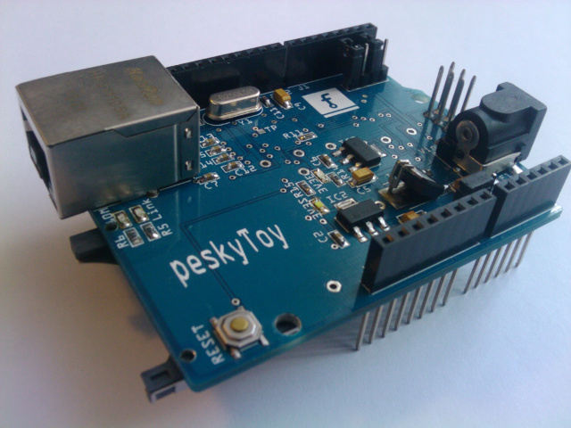

<!------------------------- INTRODUCE MEDIUM ---------------------->

  <div id="idIntroMedium" class="myContMedium w3-container w3-center w3-padding-xlarge" style="display:block">
      
    <p class=" w3-text-black w3-large">This is a combo board which provides an ethernet interface (based on enc28j60 chip) and a SD/TF-card full size socket. The board designated for early Arduino board with 5V power, like UNO, Mega1280/2560 and so on. But you can use it with any modern 3.3V powered development board (STM32 also) which has Serial Peripheral Interface (SPI).
    </p>
  </div>

